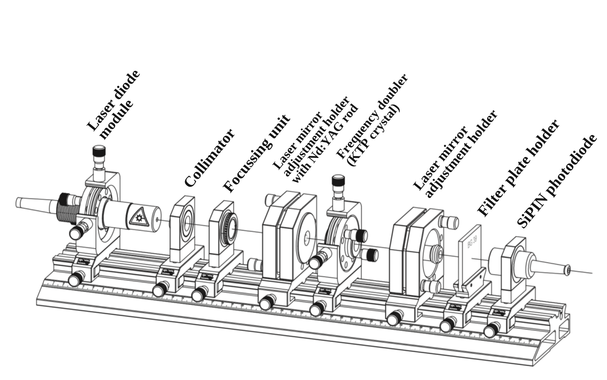
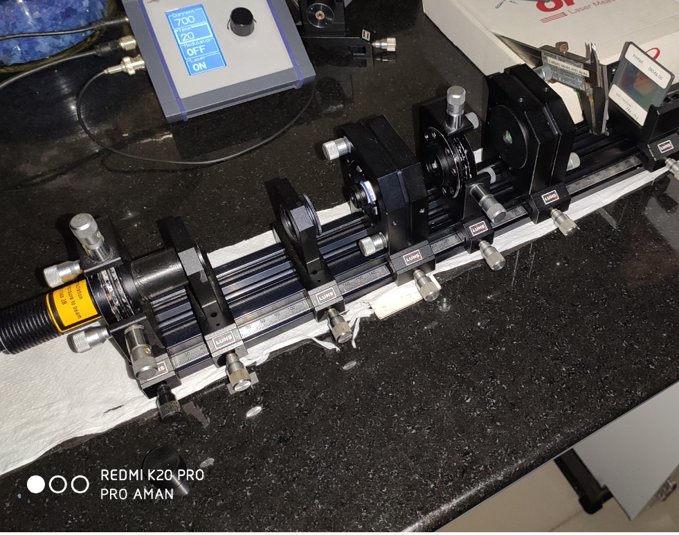
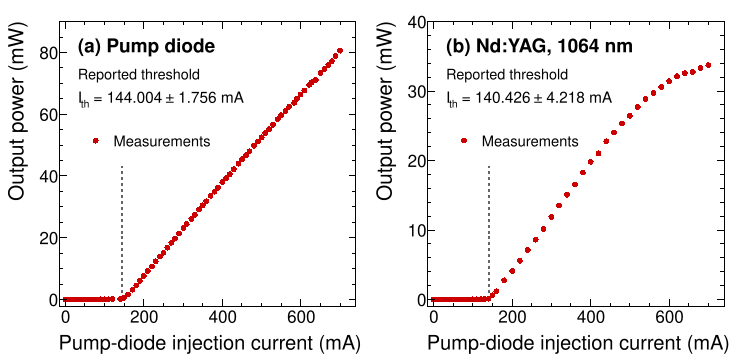
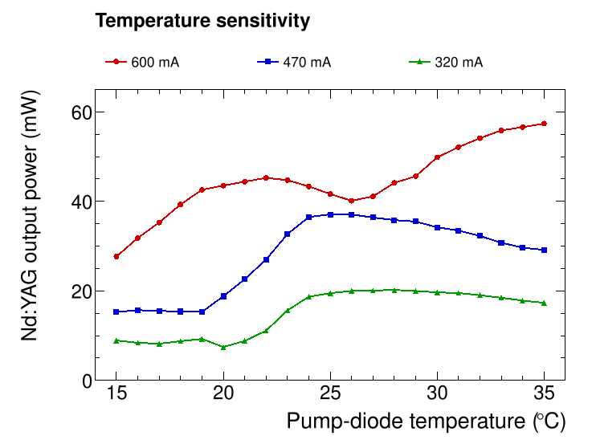
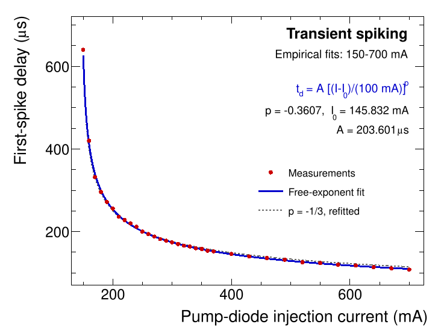
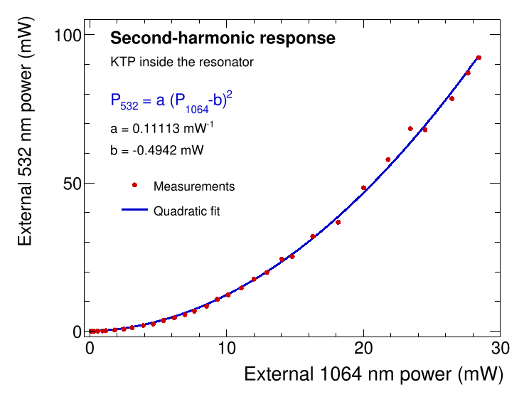
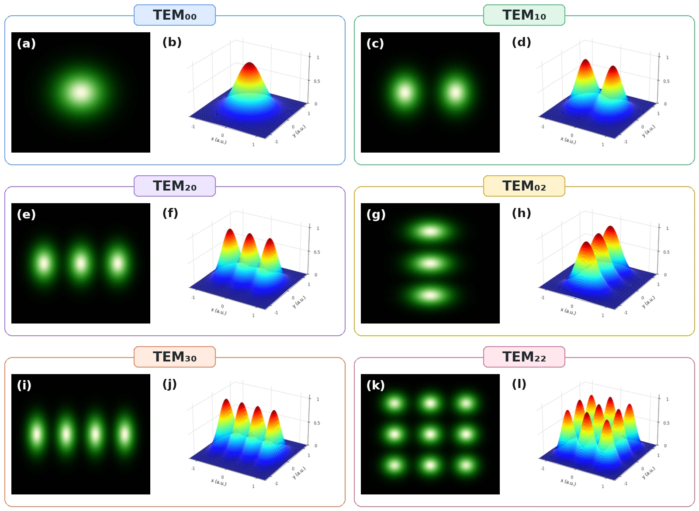

Building and Characterizing a Diode-Pumped Nd:YAG Laser
Optical alignment, laser dynamics, frequency doubling, and transverse modes
Overview
A working laser depends on more than choosing a gain medium. The optical pump, resonator geometry, and alignment must work together to establish and sustain lasing. In this Integrated Master’s laboratory project, I assembled and aligned a diode-pumped neodymium-doped yttrium aluminum garnet (Nd:YAG) laser from a modular optical setup, then investigated its output characteristics and several features of its dynamics.
The experiments began with the 808 nm pump diode and the generation of 1064 nm infrared laser light. I then measured lasing thresholds and output power, examined transient spiking, and used a potassium titanyl phosphate (KTP) crystal to generate green light at 532 nm through second-harmonic generation. Finally, I studied the transverse intensity patterns of the frequency-doubled beam. The work combined patient optical alignment with quantitative measurements and numerical analysis of the results.
Experimental Setup
The system used a temperature-controlled diode laser to optically pump a Nd:YAG crystal. Collimating and focusing optics directed the pump light into the gain medium, which formed part of an adjustable resonator. The output was characterized using an optical power meter, a photodiode detector, and an oscilloscope. For frequency doubling, a KTP crystal was introduced into the resonator to convert part of the 1064 nm radiation into 532 nm light.


A major practical challenge was achieving a common optical axis through the pump optics, Nd:YAG crystal, and resonator mirrors. The alignment was refined iteratively until stable laser operation could be obtained.
Methods
Aligning and characterizing the laser
We first characterized the pump diode by varying its injection current and temperature. Absorption measurements through the Nd:YAG crystal helped locate a favorable pump-wavelength region; the report discusses an absorption feature consistent with pumping near 808.4 nm, while noting that the limited temperature range did not establish an unambiguous spectral assignment.
After aligning the resonator, we measured the infrared output power as a function of pump-diode current. These measurements were used to identify the onset of lasing and its approximately linear operating region. Output-power measurements at different diode temperatures also illustrated the sensitivity of the laser to pump wavelength and optical alignment.
Measuring the excited-state lifetime and transient response
We monitored the photodetector signal after changing the pumping conditions. Assuming an exponential decay,
\[ V(t) = V_0 e^{-t/\tau}, \]
we estimated the lifetime of the Nd:YAG \(^4F_{3/2}\) metastable level using the time at which the measured signal fell to \(V_0/e\). Ten repetitions were used to estimate its mean and spread. The report notes a photodetector response time of approximately \(10\ \mu\mathrm{s}\) for the selected gain setting.
In pulsed operation, we also recorded the time between turning on the pump and the first large laser-output spike. The relationship between this delay and pump current was investigated using empirical fits.
Frequency doubling and beam profiles
To explore nonlinear optical behavior, we inserted a KTP frequency-doubling crystal inside the resonator. We observed green second-harmonic light at 532 nm and measured how its external output power changed with the measured fundamental output. Finally, we recorded the shapes of several transverse laser modes and compared their intensity distributions with expected beam profiles.
Results and Interpretation
Lasing thresholds and excited-state lifetime
The two stages of the optical system showed distinct output-power responses to pump-diode current. The measured thresholds and the excited-state lifetime are summarized below.
| Measurement | Reported result |
|---|---|
| Pump-diode lasing threshold | \(144.004 \pm 1.756\ \mathrm{mA}\) |
| Nd:YAG lasing onset, expressed as pump-diode current | \(140.426 \pm 4.218\ \mathrm{mA}\) |
| Nd:YAG \(^4F_{3/2}\) lifetime | \(263.5\ \mu\mathrm{s}\) (sample standard deviation: \(10.5\ \mu\mathrm{s}\)) |
The lifetime was estimated from ten oscilloscope measurements. The stated \(10.5\ \mu\mathrm{s}\) characterizes the spread of those measurements, rather than a complete uncertainty budget; the detector response time was assessed separately in the report. The Nd:YAG output became approximately linear over an intermediate current range and showed signs of saturation at higher pump currents.

Pump-temperature sensitivity
The Nd:YAG output also depended on the diode temperature, which changes the pump wavelength and its overlap with the crystal absorption spectrum. The measured dependence varied with the fixed injection current, as illustrated below. The lines connect measured points and do not represent an additional fit or a temperature-to-wavelength calibration.

Transient spiking
When the pump was switched on, the laser output did not immediately settle to its steady-state value. Instead, a large initial spike appeared after a measurable delay. The report found that, over the measured current range, the delay was approximately described by
\[ t_{\mathrm{delay}} \propto (I-I_{\mathrm{th}})^{-1/3}, \]
where \(I\) is the pump-diode injection current and \(I_{\mathrm{th}}\) is a threshold determined by the empirical fit. This behavior illustrated the transient response of the coupled population inversion and intracavity light field.

For these reconstructed plots, a new unweighted fit gives an empirical exponent of approximately \(-0.361\) and an onset parameter \(I_0\approx145.8\ \mathrm{mA}\). These are fit results from the tabulated spiking data, distinct from the lasing thresholds reported above. The \(-1/3\) behavior remains a useful approximation over the measured current range, rather than an exact relation.
Second-harmonic generation
With the KTP crystal inside the resonator, the infrared output at 1064 nm produced visible green light at 532 nm. In this setup, the green signal was not observed when the crystal was placed outside the resonator, consistent with the importance of the higher intracavity intensity for this nonlinear process. The measured output powers followed an approximately quadratic relationship,
\[ P_{2\omega} \propto P_{\omega}^{2}, \]
as expected in the regime considered in the report. Because the fundamental and second-harmonic powers were measured at different outputs of the optical system, their numerical ratio should not be treated directly as a conversion efficiency.

The fitted quadratic describes the tabulated external powers. Its parameters were newly estimated from the original table; they should not be interpreted as an independently calibrated optical conversion efficiency or an observed zero-power offset.
Transverse laser modes
The frequency-doubled output also exhibited distinct transverse intensity patterns. The fundamental \(\mathrm{TEM}_{00}\) mode appeared as a single bright spot, with an approximately Gaussian transverse profile. Higher-order modes showed multiple lobes and nodes; the \(\mathrm{TEM}_{10}\) pattern provides a clear two-lobed example.

Conclusions
The project connected the construction and alignment of an optical instrument with measurements of the physics it makes accessible. We established Nd:YAG laser operation, measured its power characteristics and metastable-state lifetime, observed transient spiking, generated a visible second harmonic, and investigated transverse beam modes. It was a practical introduction to how sensitive experimental systems are assembled, calibrated, and understood through careful measurement and analysis.